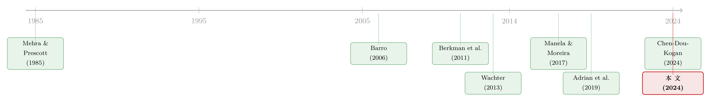

把「灾难」从价格里赶出去：怎样在不看资产价格的前提下，量出一国的宏观尾部风险
本文读的是 Marfè & Pénasse (2024, Journal of Financial Economics)：他们用 42 个国家、1900–2020 年的消费数据，靠分位数回归直接「预报」消费增长左尾发生大崩盘的概率 π̂，全程不碰资产价格；然后回头去问——这个独立量出来的宏观尾部风险，是不是真的和股价、股权溢价一起动？答案是肯定的。这就给「稀有灾难」模型提供了一把可以从外部检验、而非自我循环的尺子。
1 一个谁都用、却谁都没量过的东西
先讲一个金融学里最有名的窟窿。
1985 年，Mehra 和 Prescott 把美国的数据摊开，发现一件让人难堪的事：历史上股票相对无风险资产的超额收益高得离谱（年化六七个百分点），可消费的波动却小得可怜。要用标准的消费资本资产定价框架去解释这么高的股权溢价 (equity premium)，你得把风险厌恶系数调到几十甚至上百——荒唐。这就是著名的股权溢价之谜 (equity premium puzzle)。
接着，一个绝妙的修补思路出现了。Rietz (1988) 提出，也许我们平时观察到的消费波动，根本不是投资者真正害怕的东西。投资者真正害怕的，是那种几十年一遇、一来就把消费砍掉两三成的大崩盘——战争、大萧条、恶性通胀。哪怕这种「稀有灾难」(rare disaster) 发生的概率只有百分之几，只要它足够惨烈，理性的投资者就会要求一笔很高的补偿来持有股票。Barro (2006) 用跨国的长历史数据把这个想法做实，证明了一个小概率的宏观灾难确实能把股权溢价撑起来。
然后，真正让这套理论起飞的，是把灾难概率「时变化」。Gabaix (2012)、Gourio (2012)、Wachter (2013) 各自给出了灾难概率随时间波动的模型。一旦灾难概率会变，模型就不只能解释「为什么股票贵」，还能顺手解释一堆动态之谜：股市的过度波动、收益率的可预测性、期权的波动率偏斜……几乎是一套万能钥匙。
但万能钥匙往往意味着不可证伪。问题出在这里：在标准偏好下，资产价格对尾部风险极其敏感，这意味着只要你允许灾难概率时变，你几乎总能反推出一组参数，把任何价格现象「解释」掉。于是灾难风险被人半开玩笑地称作经济学里的「暗物质」(dark matter)——你知道它在那儿，因为价格在动，可你从来没有独立地称量过它。Campbell (2017)、Cochrane (2017)、Chen et al. (2024) 都点过这层窗户纸。
这正是全篇的张力所在：几乎所有对灾难风险的度量，都是从资产价格里反推出来的。用价格反推出灾难风险，再用这个灾难风险去解释价格——这是一个首尾相接的圈。你没法用它来检验稀有灾难理论本身，因为它的输入就是它要解释的输出。
那么，一个自然的问题是：能不能不看任何资产价格，单凭宏观数据本身，把这个时变的灾难概率量出来？ 如果能，再回头看它和价格的关系，那才叫真正的检验。
这就是这篇论文要做的事。
2 核心思路：不预测灾难，预测「左尾」
度量稀有灾难，第一道坎是「稀有」二字。大崩盘几十年才来一次，单看美国，一个世纪也就那么六七回，样本少到连无条件概率都难估准，更别说估计一个时变的概率了。
作者的破局靠两件事。
第一，横向铺开。 沿着 Barro (2006) 的传统，把样本从美国一国扩到 42 个国家、1900 到 2020 年。崩盘在一国是稀有事件，放到全球面板里就攒出了足够多的观测。当然，各国的长期增速和波动天差地别，直接混在一起没法比，所以作者把每个国家的消费增长标准化成均值为零、标准差为一（用滚动窗口，避免用到未来信息）。一个让人安心的检验：标准化之后，美国序列和非美序列的分布用双样本 Kolmogorov–Smirnov 检验竟然无法拒绝同分布（p = 0.11；多维版本 p = 0.64）——这说明把各国拼在一起是站得住脚的。
第二，也是真正关键的一步——别去预测「灾难」这个稀有事件本身，而去给整条左尾建模。 与其盯着那六七个崩盘点，不如用一组有预测力的变量去刻画消费增长整个条件分布的左半边怎么随时间移动。崩盘的概率，不过是这条左尾被推到某个阈值以下的「副产品」。这样一来，估计用上了左尾的全部变异，而不只是极少数极端事件——数据效率高了一个量级。
让我把记号摆清楚。先定义 \(H\) 年的消费增长：
$$\Delta c_{i,t}^{(H)} \equiv \ln\!\left(\frac{C_{i,t}}{C_{i,t-H}}\right)$$
这里 \(C_{i,t}\) 是国家 \(i\) 在 \(t\) 年的人均实际消费。之所以用多年窗口（正文主要取 \(H=3\)），是因为宏观灾难往往不是一年砸到底，而是拖好几年慢慢展开——Barro & Ursúa (2008) 的灾难平均持续约三年半。
再定义什么叫一次「危机」。作者不去比较从波峰到波谷的累计跌幅，而是用一个固定阈值：当 \(H\) 年消费增长低于其长期均值整整 \(k\) 个标准差时，记为一次危机（正文取 \(k=2\)，即「两个标准差」的暴跌）：
$$\text{Crisis}_{i,t}^{(H)} = \begin{cases} 1, & \text{if } \Delta c_{i,t}^{(H)} < \operatorname{mean}\!\big(\Delta c_{i,t}^{(H)}\big) - k \times \operatorname{SD}\!\big(\Delta c_{i,t}^{(H)}\big) \\[4pt] 0, & \text{otherwise} \end{cases}$$
按这个定义，美国在 1918、1919、1930、1931、2007、2008 这几年踩中了危机线——一战末的流感与战争、大萧条、大衰退，对得上历史。
于是，作者要量的「宏观风险」(macro risk)，就是给定信息集后、未来发生这样一次危机的概率：
注意 a3 这个信息集 \(I_{i,t}\)——这是全篇的命门。作者并不直接观测它，而是假设 \(\pi_{i,t}\) 是一组可观测预测变量 \(X_{i,t}\) 的函数，\(\pi_{i,t}=f(X_{i,t})\)，然后想尽办法让 \(X_{i,t}\) 尽量逼近真实的 \(I_{i,t}\)。
3 识别策略：两步走，把分位数翻译成概率
怎么求出那个 \(f\)？作者借用了 Adrian, Boyarchenko & Giannone (2019) 在「脆弱增长」(vulnerable growth) 一文里的两步半参数方法，把它从美国 GDP 搬到了国际消费上。
第一步，分位数回归。 用 18 个 \(t\) 时刻的预测变量——涵盖宏观、战争与政治、自然灾害、金融状况、资产价格五大类——去预测 \(t\) 到 \(t+3\) 年消费增长的各条低分位数。模型是 Koenker & Bassett (1978) 经典的线性条件分位数：
$$Q_{\Delta c_{i,t}^{(H)}}\!\big(\tau \mid X_{i,t}\big) = X_{i,t}\,B$$
对一组覆盖左尾的分位数 \(\tau \in [0.01, 0.5]\) 分别估出系数。这里有两个手法值得停一下：
- 跨国汇合 (pooled)。 系数 \(B\) 被约束在各国之间相等。这样每条分位数回归「人均」用不到一个自由参数，虽然「各国系数完全一样」几乎肯定不严格成立，但它换来了大得多的估计效率，代价只是一个但愿不大的偏误。汇合回归在预测文献里很常见，通常反而能提升样本外表现（Garcia-Ferrer et al., 1987）。
- 惩罚收缩。 预测变量一多就容易过拟合，作者在分位数最小化里加上基于 \(L_1\)、\(L_2\) 及二者结合的惩罚项，把不太有信息的系数往零收缩。
第二步，把分位数翻译成概率。 估完一组条件分位数后，对它们做插值，拟合出 \(t\) 时刻那条完整的条件分布 \(\hat g_{i,t}\)，再去问：这条分布落在「均值以下两个标准差」处的累计概率是多少？形式上：
$$\hat\pi_{i,t} = \hat g_{i,t}^{-1}(-2)$$
（标准化之后，「两个标准差」对应的就是数值 $-2$。）这一步把一堆分位数信息浓缩成了一个数——国家 \(i\) 在 \(t\) 年后发生大崩盘的概率。全篇用「帽子」表示这些估计量。
还有一个孪生兄弟 π̂⁻：它在第一步的预测变量里剔除掉所有资产价格变量。这正是全文最妙的设计——π̂⁻ 是一把「干净」的尺子，因为它从头到尾没看过价格。后面所有关于「尾部风险与价格同向变动」的结论，作者都要用 π̂⁻ 再跑一遍，以排除「价格预测价格」这种机械的自我实现。
为稳健起见，作者还试了把 \(f\) 设成标准正态分布的设定（\(f(X_{i,t})=\Phi(X_{i,t}'b)\)），即直接对已实现的危机做 probit 回归，结论不变。
4 主要结果：它确实在该高的时候高
图 1 画出了美国的 π̂。宏观风险大多在 1% 到 5% 之间游走，而在几个历史的至暗时刻明显抬升：1907 年的尼克博克危机、大萧条、两次世界大战、朝鲜战争，以及 2009 年的大衰退。这条曲线的起伏，纯粹是模型「预报左尾」能力的直接产物——最靠谱的预测变量包括本国与邻国已实现的衰退、世界增长、国外的战争与危机，以及美国（或全球）的股息价格比。作者还报告，这个预测模型在样本外表现相当好，原则上可以拿来实时预警危机。
接着是全篇的「检验时刻」：这把不看价格量出来的尺子，和资产价格对得上吗？
第一，对得上，而且方向完全符合理论。 当 π̂ 高时，股价偏低（股息价格比偏高），二者相关系数为 corr = 0.37。更具体地说，股息价格比 D/P 上升一个标准差，对应 π̂ 上升 2.3%。这恰恰是稀有灾难模型的预言：尾部风险一高，投资者就躲开股票，把价格压低。用 Martin (2017) 提出的另一种股权溢价代理，也得到类似结果。
第二，π̂ 能直接预测国际股票收益，把尾部风险与股权溢价的链条坐实了。（关于「贴现率/股权溢价随时间可预测」是资产定价的核心议题这一背景，可参见《贴现率：资产定价的中心议题》。）
第三，一个漂亮的「不对称」反衬。 π̂ 与未来消费增长本身只有微弱关系——也就是说，作者这套估计恰好复现了那个著名的「脱节」：股权溢价随宏观尾部风险大起大落，可消费却看不出多少可预测性。这正是稀有灾难理论想要的样子。
第四，也是最要紧的——以上结论在用 π̂⁻（剔除资产价格预测变量）重估时依然成立。 这意味着「价格与尾部风险同向」不是价格预测价格的机械产物。作者还进一步说明，π̂ 的预测力与「已实现的衰退」「已实现的金融危机」所带来的预测力是有区别的，这有助于把稀有灾难风险从其他竞争性的价格波动理论里分离出来。
顺带，作者也给那些既有的代理变量做了体检：π̂ 和 Berkman, Jacobsen & Lee (2011) 的国际政治危机计数相关系数只有 0.15——政治危机只是众多能预测尾部风险的变量之一；π̂ 和股市波动率指数正相关但远非完美，印证了 Manela & Moreira (2017)、Barro & Liao (2021) 的发现：波动率确实预报宏观风险，但股市波动还会因为许多与宏观尾部无关的原因而变动。换句话说，π̂ 比任何单一代理都更全面。
5 校准：用「干净」的尺子去喂一个稀有灾难模型
量出 π̂ 之后，作者顺势做了第二件事：拿它去校准 (calibrate) 一个稀有灾难模型，看看这套理论到底能不能定量地把股权溢价之谜补上。
模型设定接近 Wachter (2013)：代表性投资者具有 Epstein–Zin 递归偏好，消费增长是一个外生过程，以一个时变的概率 \(\pi\) 遭受稀有灾难。作者沿 Mehra & Prescott (1985) 的路子，先校准消费动态、再推出资产定价矩，最后拿模型矩去对实证矩。
这里的关键巧思，仍然是那条「不碰价格」的红线。校准用的是剔除了资产价格信息的消费动态，因此消费参数不是被反向工程去迎合资产定价数据的。作者用矩方法，只瞄准消费动态相关的矩——平均消费增速、消费增速标准差、危机（2-SD 事件）的期望个数、那个不可观测的灾难概率 \(\pi\) 的自协方差与方差、以及期望的灾难规模——每个参数对应一个矩条件，并且推断显式地考虑了估计误差和三年期数据带来的时间加总。
结果是：在风险厌恶系数仅为 5、跨期替代弹性为 1 这样相当保守的偏好下，模型就能生成一个又高又波动的股权溢价和一个偏低的无风险利率，还能复现期权波动率偏斜、股票收益可预测、以及消费不被价格预测这几样特征。
更有意思的是它和 Chen, Dou & Kogan (2024) 关于「暗物质」的对话。Chen et al. 指出，像 Wachter (2013) 那类高持续、低波动的灾难概率设定，会过度依赖暗物质，导致内部可证伪性差、样本外表现脆弱。而本文从消费数据里估出来的 \(\pi\)，恰恰是中等持续、偏高波动的——于是它不太需要暗物质，反而换来了更强的内部可证伪性和更稳的样本外表现。这一点，正是「先独立量出 \(\pi\)、再校准」相对「直接从价格反推」的根本优势。
一句话点透全篇的方法论价值：以往的稀有灾难度量像是一个无法证伪的信仰；本文把灾难概率从价格里赶出来、放回宏观数据里独立测量，于是「稀有灾难能否解释股权溢价」第一次变成了一个可以被数据拒绝的命题。
6 文献脉络
把这条线捋一捋，故事其实很清楚。
源头是 Mehra & Prescott (1985) 砸出的股权溢价之谜，和 Rietz (1988) 给出的「稀有灾难」解法。Barro (2006) 用跨国长历史把它做成可信的实证，Barro & Ursúa (2008) 则攒出了这条文献赖以为生的国际宏观危机数据库；Nakamura, Steinsson, Barro & Ursúa (2013) 进一步说明，即便危机是多年缓慢展开、且伴随复苏，模型依然能撑起股权溢价。

接着，理论分叉成「时变灾难概率」一支——Gabaix (2012)、Gourio (2012)、Wachter (2013)——动态之谜由此被一并纳入。但「怎么度量这个时变概率」始终是软肋，于是出现了两条度量路线：一条用代理变量，如 Berkman, Jacobsen & Lee (2011) 的政治危机、Manela & Moreira (2017) 的新闻隐含波动率；另一条从期权价格里抽取，如 Siriwardane (2015)、Backus, Chernov & Martin (2011)、Barro & Liao (2021)，但这条路必须对偏好与市场行为下结构假设，而 Julliard & Ghosh (2012) 等人据此反而得出「稀有灾难撑不起价格」的结论。两条路各有死穴：代理变量张不开经济主体的信息集，期权法则陷入「用价格检验价格」的循环。
本文站的位置，是把 Adrian, Boyarchenko & Giannone (2019)（及 Giglio, Kelly & Pruitt, 2016）的分位数回归思路嫁接到国际消费上，做出一把不依赖任何资产价格、却综合了所有代理信息的尺子，并与 Chen, Dou & Kogan (2024) 关于「暗物质」的诊断正面接轨。
7 评论与延伸（Q&A + 研究方向）
(a) 几个可能的疑问
Q：这套方法和 Adrian et al. (2019) 的「脆弱增长」到底差在哪？
差在目标与用途。Adrian et al. 用分位数回归刻画美国 GDP 增长的条件分布，关心的是金融条件如何压低增长的左尾。本文把对象换成 42 国的消费、把窗口拉长到三年、并把那条左尾进一步提炼成一个单一的灾难概率 \(\hat\pi=\hat g^{-1}(-2)\)，目的不是预报增长，而是为「稀有灾难资产定价模型」造一把可外部检验的标尺。
Q：π̂ 和 π̂⁻ 区别很小，那剔除价格这一步真有必要吗？
正因为二者高度相关、且无法拒绝它们预测力相等，剔除价格这一步才有意义。它证明了「尾部风险量出来的样子」不依赖资产价格输入；于是后面「
π̂与股价同向、且能预测股票收益」就不是机械的同义反复，而是一个真有信息含量的检验结果。
Q：把 42 个国家的系数强行约束成相等，会不会把美国的特殊性抹掉？
这是效率与偏误的权衡。作者的辩护有两条：标准化后美/非美分布无法拒绝同分布（KS
p=0.11），说明同质化不算离谱；而汇合回归在预测文献里通常反而提升样本外表现。代价是一个但愿不大的偏误——这是诚实的取舍，而非无代价的午餐。
Q：用「固定阈值的 2-SD」定义危机，会不会太机械？真实灾难是从波峰到波谷的。
作者明确承认与 Barro & Ursúa (2008) 的「峰-谷」口径不同。固定窗口的好处是天然适配「预报」框架——你不需要事后才知道波谷在哪。代价是它把正常时期的长期增速与波动当成常数，所以
π̂度量的其实是「衰退风险」随水平、波动与高阶矩的综合移动。
Q：校准说 RRA=5、EIS=1 就够，可这依赖递归偏好，换成时变风险厌恶是不是也能解释？
这正是本文谨慎之处。作者强调，度量尾部风险的动态，恰恰是把稀有灾难与「时变风险厌恶」等替代机制区分开的前提。本文给出的是「在保守偏好下灾难概率足以撑起溢价」这一充分性证据，并不排除其他机制也在起作用——它把球踢回给了那些替代理论：你们也拿一把不看价格的尺子来量量看。
Q：波动率本来就预报宏观风险，那 π̂ 比一个 VIX 强在哪？
强在「增量」。作者发现波动率确实预报危机，但
π̂预报得更准，因为它把波动率之外的一大批变量（已实现衰退、国外战争、世界增长……）的增量信息都揉了进来。结果就是π̂与波动率指数正相关却远非完美——这恰好说明股市波动有相当一部分是为与宏观尾部无关的原因而动的。
(b) 几个可能的研究问题与提案
1. 把 π̂ 搬到公司债与信用利差上。
【经济故事】稀有灾难理论几乎全在股票上检验，但灾难风险对信用利差的影响应当更直接——崩盘时违约同时爆发，信用风险有强烈的尾部成分。如果 π̂ 能预测投资级/高收益利差的走阔，那就把这套度量从股权溢价推广到了信用风险溢价。
【可行性】高。数据现成（ICE/TRACE 利差、Moody's 违约率），π̂ 作者已公开。识别上可把 π̂⁻ 当外生的尾部风险冲击，回归未来利差变动，控制已实现衰退与已实现违约。难点是分离「尾部风险溢价」与「预期违约」，但这恰是有意思的地方。
2. 外资持有人会因 π̂ 上升而先撤离吗？
【经济故事】若外国投资者对东道国宏观尾部风险更敏感（信息劣势 + 母国偏好），那么一国 π̂ 抬升时，外资在该国债券/股票里的份额应当先行下降，并放大流动性冲击。这把宏观尾部风险和「资本外逃」连了起来。
【可行性】中。需要分国别的外资持有数据（如 TIC、各国央行托管统计）与 π̂ 的国别面板对齐。识别可用 π̂⁻ 的国别变异，叠加国家×年固定效应；挑战在于把「尾部风险驱动的撤离」与「已实现危机后的被动减持」分开。
3. π̂ 高企时，公司债市场的流动性是否系统性变差？
【经济故事】尾部风险上升 → 做市商收紧风险预算 → 价差走阔、深度变薄。这能把宏观尾部风险与微观流动性供给连成一条因果链。
【可行性】中。TRACE 的价差/价格冲击度量 + π̂ 时间序列即可起步；难在 π̂ 是低频（年度、三年窗）而流动性是日频，需要小心处理频率错配与内生性（可用 π̂⁻ 的外生成分作工具）。
4. 把「暗物质」做成横截面：哪类资产最依赖不可观测的灾难概率？
【经济故事】沿 Chen, Dou & Kogan (2024)，不同资产（深度价外看跌期权、长久期债、新兴市场货币）对 π̂ 动态的敏感度不同。用本文这把不看价格的 π̂，可以给每类资产算一个「暗物质依赖度」，看谁的定价最经不起独立检验。
【可行性】中到低。需要把 π̂ 接进多资产定价框架并估各资产的灾难暴露，工程量不小；但概念清楚、且本文已提供独立的 \(\pi\) 序列，是把「内部可证伪性」量化到资产层面的自然延伸。
5. 实时预警：π̂ 能否进入央行的金融稳定工具箱？
【经济故事】作者称模型样本外表现好、可实时预警危机。若 π̂ 在已实现衰退之外仍对未来危机有增量预测力，它就能补充现有的早期预警指标。
【可行性】高。完全用公开宏观数据即可滚动重估，做真实样本外评估；可与 Estrella & Mishkin (1998) 的收益率曲线指标、Giglio et al. (2016) 的系统性风险度量横向比拼预测力。
我的判断
这篇文章的贡献，与其说是「又造了一个灾难风险代理」，不如说是改写了检验稀有灾难理论的游戏规则。以往这条文献的尴尬在于循环论证——用价格反推灾难、再用灾难解释价格。本文把灾难概率彻底从价格里赶出去，放回它本该待的地方（宏观数据的左尾），于是「稀有灾难能否定量解释股权溢价」第一次成了一个能被数据拒绝的命题。方法本身（分位数回归 + 跨国汇合 + 惩罚收缩 + 分布求逆）是干净、可复制、可外推的，这一点我很欣赏。
对识别我有两点保留。其一，整套估计的命门是「\(X_{i,t}\) 能否张开真实信息集 \(I_{i,t}\)」这一无法验证的假设——作者用「预测变量类别间高度冗余」来侧面论证已经张得够开，这是聪明的间接证据，但终究不是直接验证；若投资者真正关心的某类风险（比如纯粹的政策不确定性）系统性地不在 \(X\) 里，π̂ 就会有结构性遗漏。其二，跨国系数同质的约束虽换来效率，但「2008 这种全球同步危机」与「某国的局部危机」由同一组系数预报，可能低估了全球性灾难与本地灾难在传导上的差异——作者在在线附录里用区分全球/局部危机的 probit 做了回应，值得正式纳入主结果。
后续我最想看到的，是把这把尺子从股权溢价推向信用市场与流动性：如果 π̂⁻ 能在已实现衰退之外，增量地预测信用利差走阔与做市深度收缩，那么「宏观尾部风险」就不只是解释股权溢价之谜的事后说辞，而会成为一个能横跨股、债、流动性的、真正可操作的状态变量。
参考文献
- Adrian, T., Boyarchenko, N., Giannone, D. (2019). Vulnerable Growth. American Economic Review 109(4), 1263–1289.
- Backus, D., Chernov, M., Martin, I. (2011). Disasters Implied by Equity Index Options. Journal of Finance 66(6), 1969–2012.
- Barro, R.J. (2006). Rare Disasters and Asset Markets in the Twentieth Century. Quarterly Journal of Economics 121(3), 823–866.
- Barro, R.J., Liao, G.Y. (2021). Rare Disaster Probability and Options Pricing. Journal of Financial Economics 139(3), 750–769.
- Barro, R.J., Ursúa, J.F. (2008). Macroeconomic Crises since 1870. Brookings Papers on Economic Activity 2008, 255–350.
- Berkman, H., Jacobsen, B., Lee, J.B. (2011). Time-Varying Rare Disaster Risk and Stock Returns. Journal of Financial Economics 101(2), 313–332.
- Chen, H., Dou, W.W., Kogan, L. (2024). Measuring the 'Dark Matter' in Asset Pricing Models. Journal of Finance 79(2), 843–902.
- Gabaix, X. (2012). Variable Rare Disasters: An Exactly Solved Framework for Ten Puzzles in Macro-Finance. Quarterly Journal of Economics 127(2), 645–700.
- Giglio, S., Kelly, B., Pruitt, S. (2016). Systemic Risk and the Macroeconomy: An Empirical Evaluation. Journal of Financial Economics 119(3), 457–471.
- Gourio, F. (2012). Disaster Risk and Business Cycles. American Economic Review 102(6), 2734–2766.
- Julliard, C., Ghosh, A. (2012). Can Rare Events Explain the Equity Premium Puzzle? Review of Financial Studies 25(10), 3037–3076.
- Koenker, R., Bassett, G. (1978). Regression Quantiles. Econometrica 46(1), 33–50.
- Manela, A., Moreira, A. (2017). News Implied Volatility and Disaster Concerns. Journal of Financial Economics 123(1), 137–162.
- Marfè, R., Pénasse, J. (2024). Measuring Macroeconomic Tail Risk. Journal of Financial Economics 156, 103838.
- Martin, I. (2017). What Is the Expected Return on the Market? Quarterly Journal of Economics 132(1), 367–433.
- Mehra, R., Prescott, E.C. (1985). The Equity Premium: A Puzzle. Journal of Monetary Economics 15(2), 145–161.
- Nakamura, E., Steinsson, J., Barro, R.J., Ursúa, J.F. (2013). Crises and Recoveries in an Empirical Model of Consumption Disasters. American Economic Journal: Macroeconomics 5(3), 35–74.
- Rietz, T.A. (1988). The Equity Risk Premium: A Solution. Journal of Monetary Economics 22(1), 117–131.
- Siriwardane, E. (2015). The Probability of Rare Disasters: Estimation and Implications. Working Paper.
- Wachter, J.A. (2013). Can Time-Varying Risk of Rare Disasters Explain Aggregate Stock Market Volatility? Journal of Finance 68(3), 987–1035.